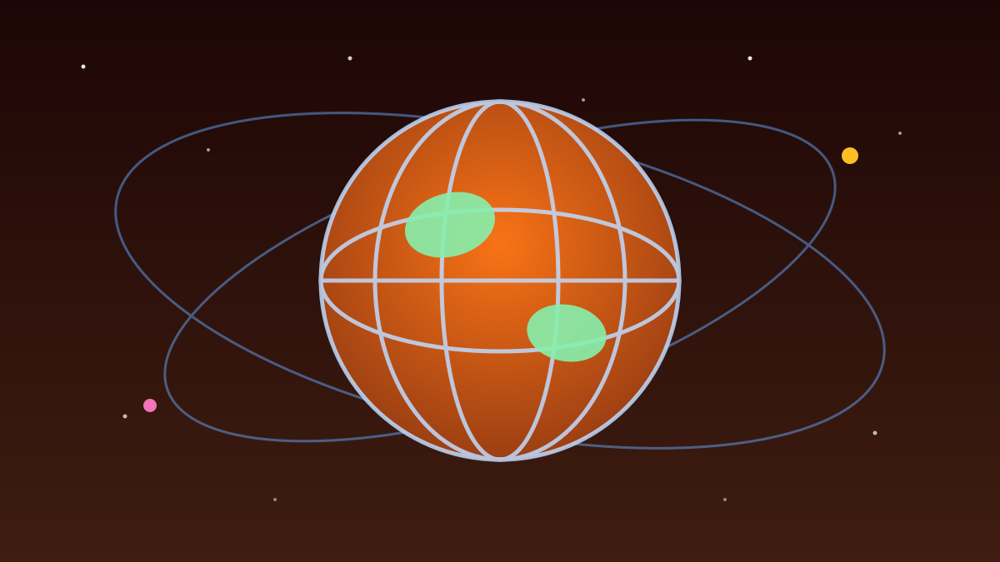

1 / 7

🌍 DUNIA
Dunia Lagi Turun ke Jalan
Dari Meksiko sampai Milan, ribuan orang menuntut keadilan buat Gaza. Bahkan bola pun ikut kena imbas. Geser →
2 / 7
🇲🇽
Meksiko & Italia pecah demo
Ribuan warga di Mexico City turun ke jalan, dipimpin langsung Duta Besar Palestina Nadya Rasheed. Mereka menuntut sanksi tegas dan pemutusan hubungan diplomatik dengan Israel.
Di Milan, massa membawa foto-foto korban dan menuntut pemerintah Italia menghentikan kerja sama militer serta membuka akses bantuan kemanusiaan seluas-luasnya.
3 / 7
🇮🇹
Italia: 50+ kota serentak turun
Sabtu (10/10/2026), demo serentak melanda lebih dari 50 kota di Italia. Di Roma sekitar 20 ribu orang long march dari Colosseum, di Turin 15 ribu, Milan 5 ribu, dan Cagliari 6 ribu.
Mobilisasi nasional bertajuk "La fine del genocidio" ini sehari setelah Nobel Perdamaian 2026 diumumkan untuk jurista Afrika Selatan, Navi Pillay.
4 / 7
🇺🇸
AS & Inggris juga ikut bersuara
Puluhan ribu warga Amerika Serikat dan Inggris juga menggelar demonstrasi besar-besaran mengecam kekerasan di Palestina. Gelombang solidaritas ini terus meluas ke banyak negara.
Suaranya satu: penghentian serangan dan perlindungan buat warga sipil di Gaza.
5 / 7
⚽
Laga Italia vs Israel dibayangi demo
Efeknya nyambung ke sepak bola. Laga kualifikasi Piala Dunia 2026 Italia vs Israel di Stadion Friuli, Udine, Rabu (14/10/2026), dibayangi potensi demo besar.
Wali kota Udine memprediksi hingga 10 ribu demonstran bisa memadati area stadion — ironisnya lebih banyak dari kapasitas penontonnya. FIGC tetap memilih mainkan laga sesuai jadwal, karena mundur berarti kalah walkover 3-0 menurut aturan FIFA/UEFA.
6 / 7
💬
Kata netizen
Warganet Italia di Instagram mendokumentasikan langsung aksi di Roma, Bologna, dan Turin — pawai damai membawa bendera Palestina, syal keffiyeh, dan spanduk menuntut embargo serta sanksi. Aktivis Greta Thunberg tercatat ikut aksi di Napoli. (Suara netizen — bukan fakta.)
7 / 7
🤔
Efeknya ke lo apa?
Topik ini bukan soal pilih kubu buat ribut di kolom komentar — tapi soal kepekaan. Konflik jauh di sana bisa bikin harga minyak naik, arus pengungsi berubah, dan panggung dunia ikut goyang.
Buat lo yang scroll berita: baca dari banyak sumber, jangan cuma dari satu video viral. Dan kalau mau bersuara, pastikan dulu faktanya bener.